Published: 2022-08-22
Source link: https://www.cnphotos.net/academy/show-81.html
Henri Cartier-Bresson. Almost no one who loves photography is unaware of this master photographer.
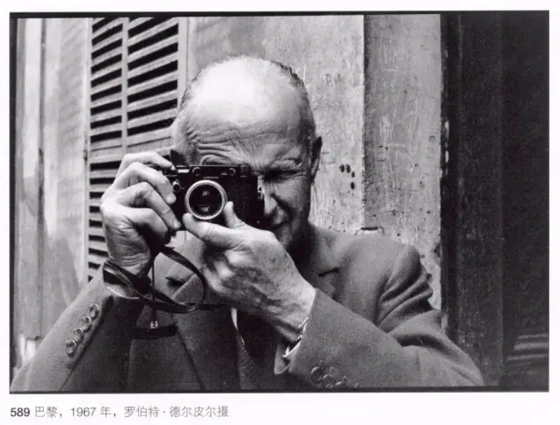
Before he became a master, he was just like anyone starting out in photography. He shot cute pets, his family, his friends, and daily life. Then one day he decided to use photography to fully set free his curiosity. That is when the foundation of his many famous works began to build.
The talk-show host Charlie Rose once interviewed Bresson in Paris. He asked Bresson what makes a good photographic composition. Without a moment's thought, Bresson answered: Geometric shapes.
Bresson's answer is simple, with no long theory. When he composes, he considers everything in front of and behind the subject to build the frame he wants. This includes the subject, the background, light and shadow, and most of all, he waits for the right moment, the so-called decisive moment. Below, we see how Bresson used every person and thing he saw through the viewfinder, and how the traits of geometric shapes form most of his major works.
1. The relationship between main subject and support
Anyone who has taken a photo knows this. Place a bright subject against a dark background, or a dark subject against a bright background, so the point you want to highlight jumps out from the background and expresses the theme. But this does not mean simply making an object big and placing it in front, or opening the aperture for shallow depth of field, the kind where the background blurs like cream. If we blurred Bresson's work, you would still clearly see the subject or theme he wanted to express. When you shoot, know clearly what is main and what is support, so the viewer knows where to look.
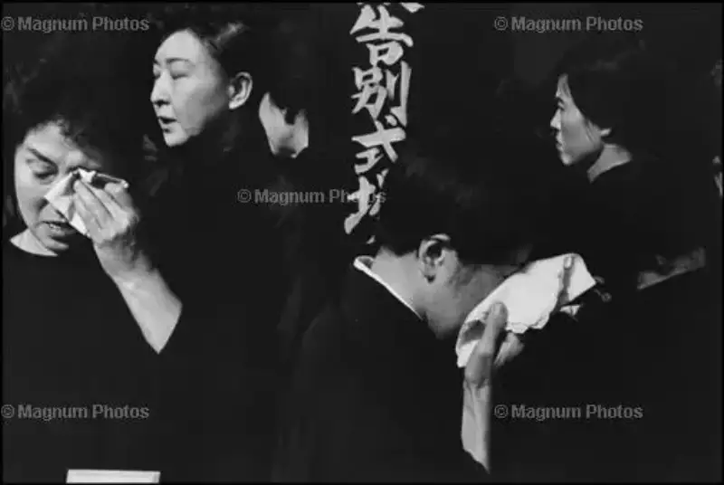
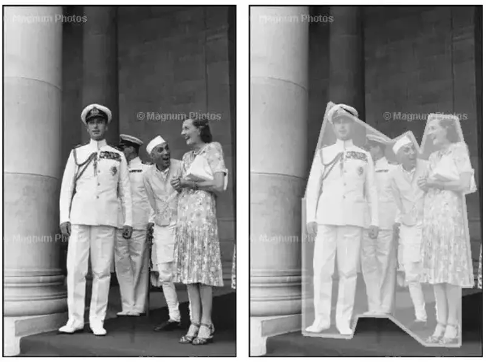
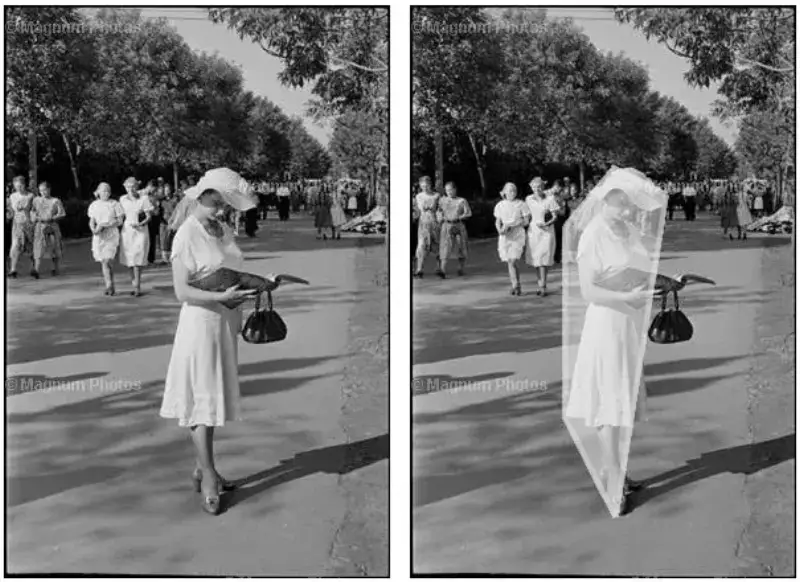
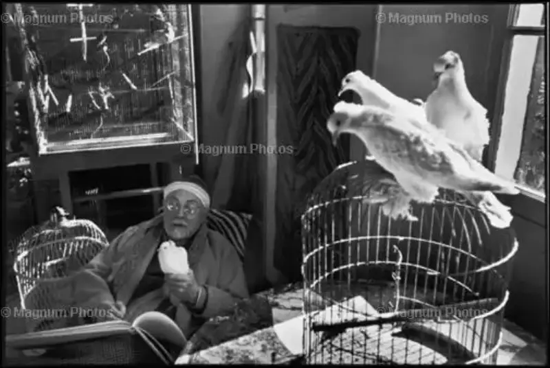
The real subject of the photo above is the pigeon.
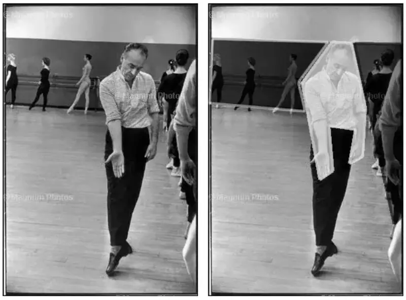
Besides the reference photo, there is a painting below that shows the main-and-support relationship. The focus of this painting is war. Your first reaction to it is probably the same as mine. What on earth is being painted here, and where is the theme? But if you look at the analysis diagram below, you will see that the painter placed a host of spears throughout the picture. The theme he wanted to highlight is war. The main-and-support idea is not only a clear subject against a setting background. It is a skillful way to make the theme stand out from the photo. Street scenes are usually cluttered, so a clear main-and-support relationship matters even more. It sounds simple. Try it next time.
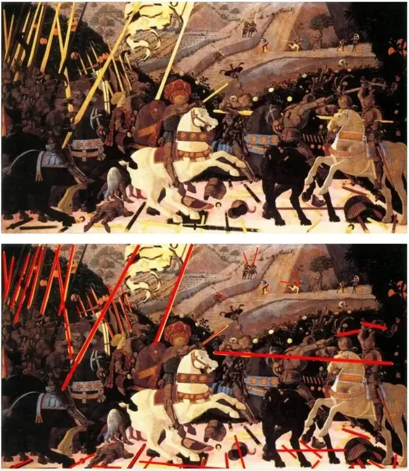
2. Find similarities
This is a way street photographers love to work with. Besides creating an interesting contrast of themes in the frame, it also strengthens the storytelling. Take the photo below. The mother holding the child is cut out of the frame. Normally, a photo of a mother and child draws us in through their expressions and their bond. But notice how the mother's fingers, the child's withered ribs, fingers, and arms echo the skeleton of the wagon wheel behind them. The subject of this photo is bones. The theme and story the photographer wants to highlight is the gaunt body of that thin little boy. If the photographer had included the mother's face, the viewer would be misled and drawn to the bond between mother and child. That may be a fine story, but the photographer wanted to show the little boy, wasted to the bone by famine.
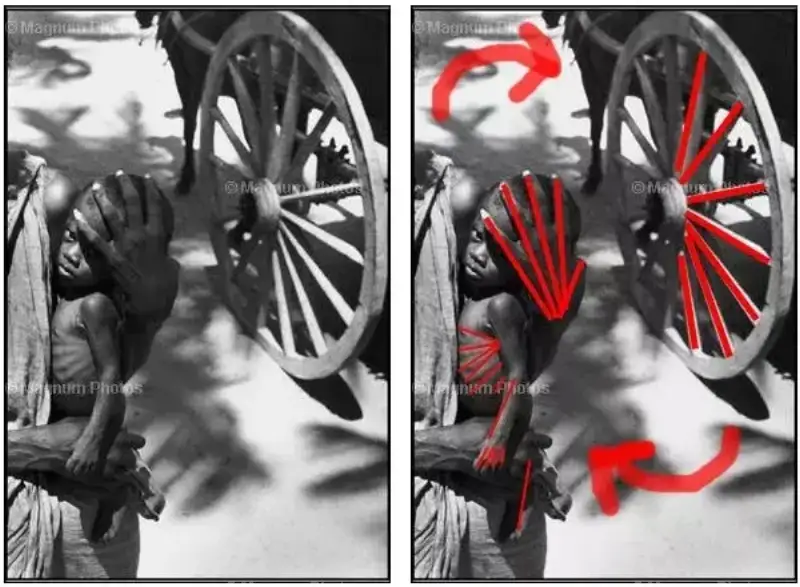
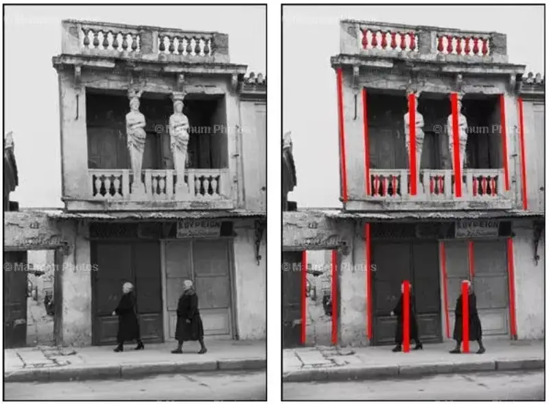
As noted, in street photography we often forget the background and focus on the theme in front. The street is full of lines, shapes, and colors. If we consider the background when we shoot, the photo opens up more possibilities, and the composition of our work improves greatly.
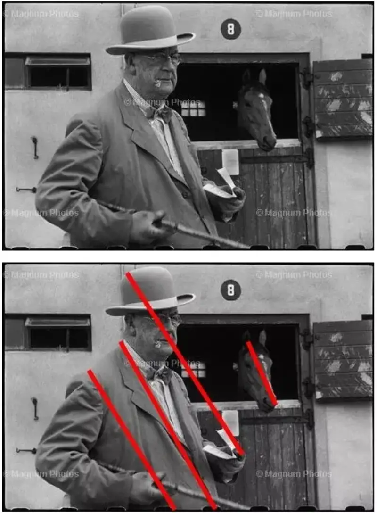
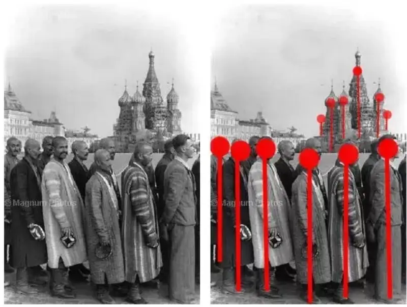
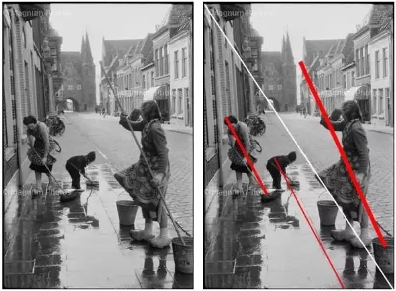
3. Make good use of light and shadow
Street photography has an advantage other styles lack: a rich mix of light sources. Experienced street photographers are good at reading light. They use the relationship between light and shadow to highlight the theme. Strong contrast between light and dark makes the bright theme stand out more and strengthens the objects in shadow. Using light and shadow well adds more layers to a photo. When I try this street-light approach, I use a method to strengthen the relationship between light and shadow. I set the aperture to its smallest and meter off the bright area. This makes the contrast between the bright and dark areas stronger.
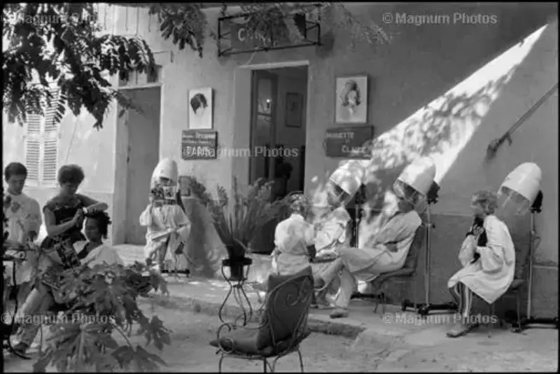
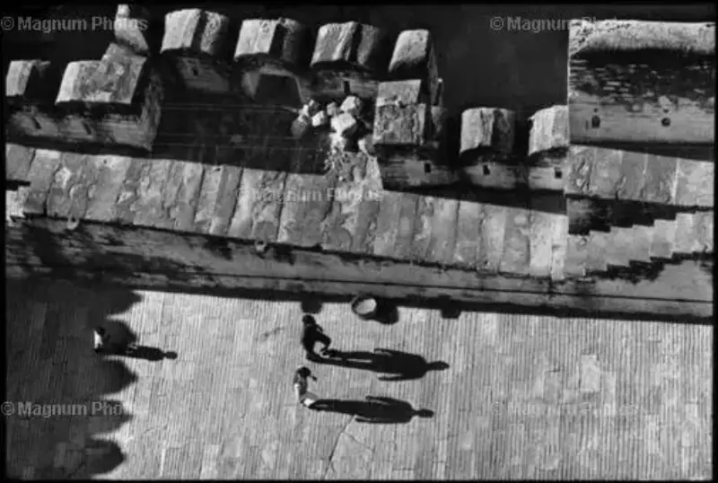
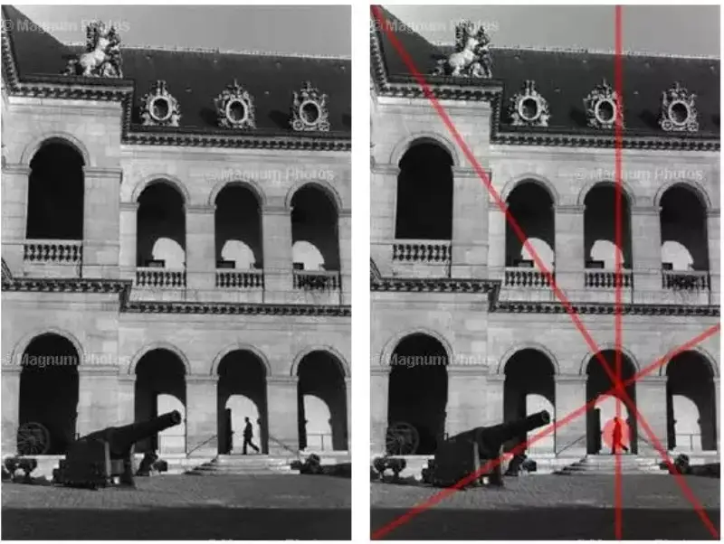
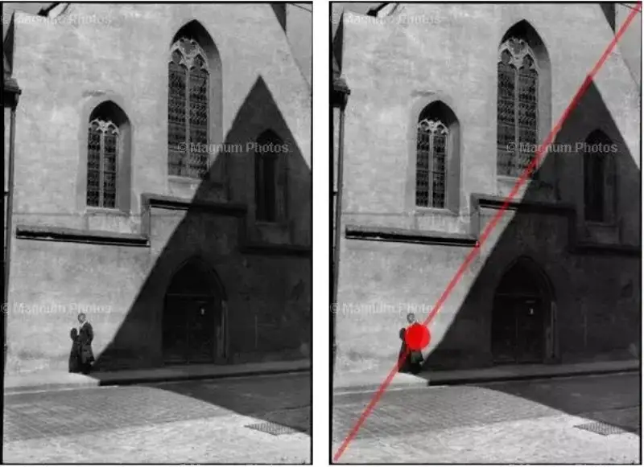
4. Learn to wait
When people picture street photography, they imagine a photographer moving through the streets with a camera, flying like an eagle and scanning for subjects with a sharp eye. That image is only half right. The other skill of street photography is waiting, like a cheetah. You wait for the right moment, and you wait until the time and the space are both right, then you press the shutter to capture the decisive moment.
If you look at more of Bresson's work, you will see how well he catches these moments. Many photos make people marvel. How did that line up so perfectly? Bresson was so lucky to catch so many great moments. The secret behind these moments is that Bresson knew how to wait in the right place for the right person or thing to enter his frame.
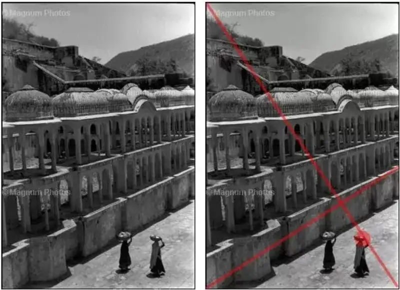
Many people new to street photography keep busy hunting for subjects. They think street photography is about grabbing and snatching shots of easily missed scenes. That is only half right. The other half is learning to observe closely and wait patiently to create the frame you want. For example, when you see an interesting scene, stand there and wait. Wait for an interesting person to walk by, watch through the viewfinder, wait for the right moment, and then press the shutter quickly. Street photography is not only about capturing a scene. It is also about creating one. And the secret of creating a scene lies in skillful observation and waiting.
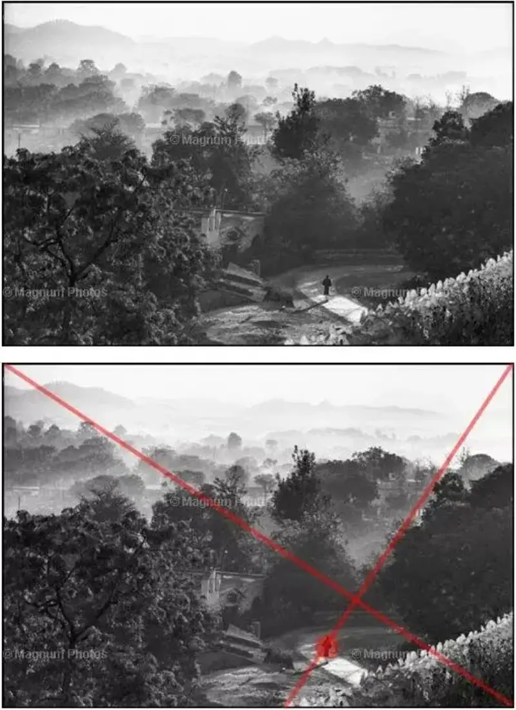
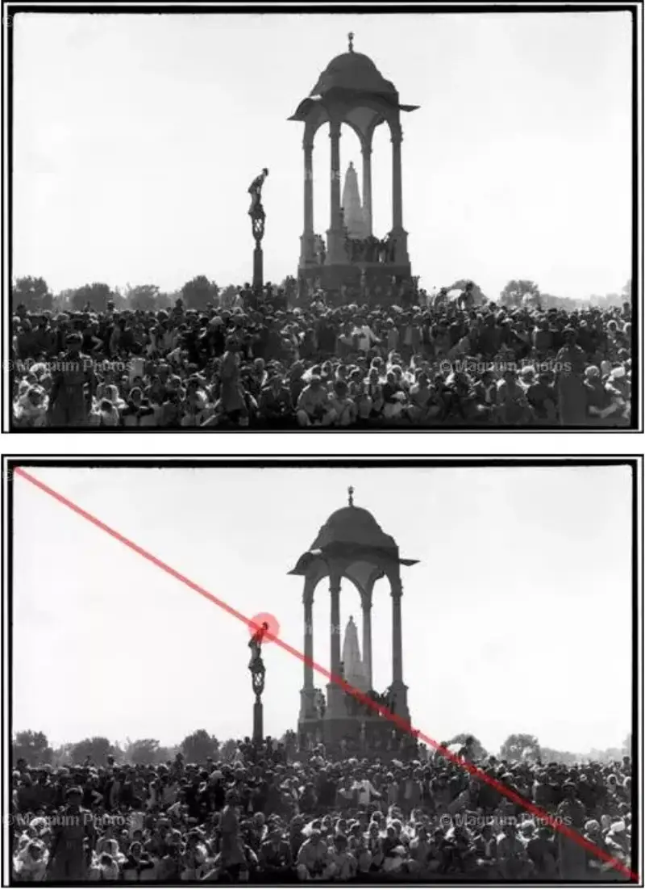
5. Understand the diagonal
The most common rule taught about frame proportion is the rule of thirds. You divide the frame into thirds and place the point of interest on one of the thirds. But you rarely see this proportion in Bresson's work. The framing he uses is the overlapping square. As in the image below, the whole frame can be divided into two squares that overlap in the middle.
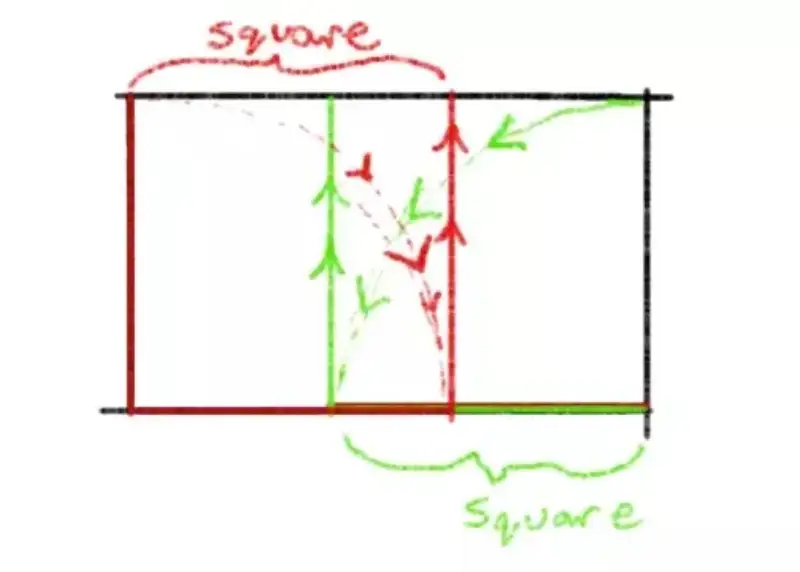
If you look at the photos below and try to read Bresson's work using the overlapping-square division, you will see that most of his work is built on this composition. Beyond the overlapping square, most of his compositions also follow a diagonal. Try drawing a diagonal line across his photos, for example from the top-left to the bottom-right corner. You will find that almost every subject falls on that diagonal. Bresson trained as a painter, so his foundation in composition is solid.
Conclusion
Remember the talk-show host Charlie Rose, who interviewed Bresson in Paris at the start of this article and asked what makes a good composition? Bresson answered: Geometric shapes. The host then asked a follow-up question. Is your photographic talent born in you? Bresson answered: It has to be cultivated.
Michelangelo once said: If people knew how hard I worked to master my craft, they would not be so surprised by my work.
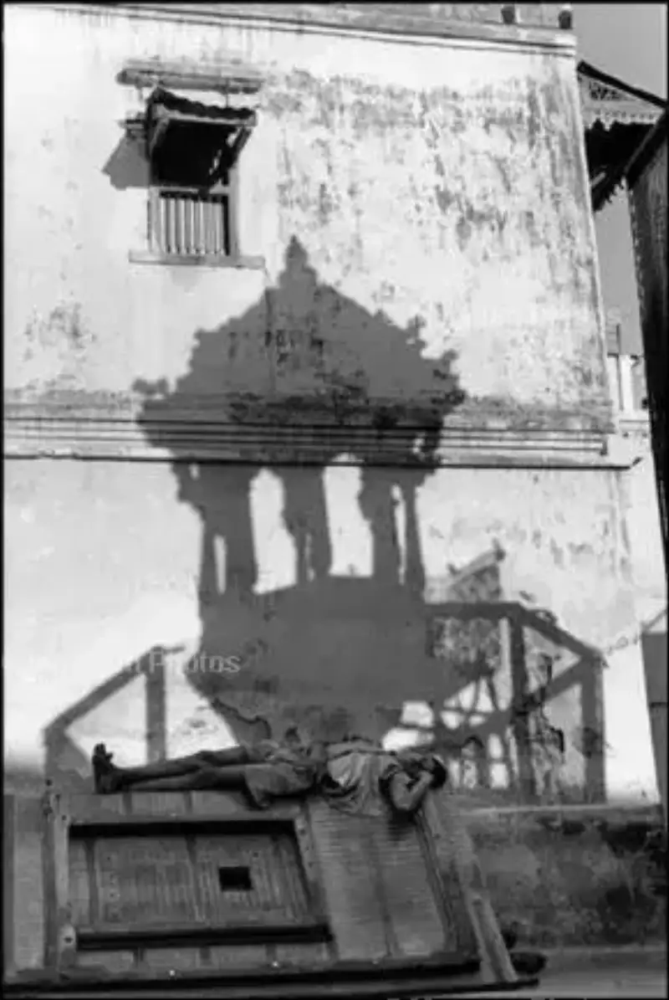
Every skill takes practice, including street photography. Things like observation, composition, waiting, knowing when to press the shutter, focus when shooting blind, blending into the rhythm of the street, and choosing the best aperture under random light. All of these improve through long practice. As noted, Bresson did not produce so many classics from the start. He shot tens of thousands of frames before he had a few works that amazed people. I recall a street photographer sharing his experience. He said he may shoot ten or twenty thousand photos in a year, but the ones he is truly happy with and wants to share may be fewer than ten.